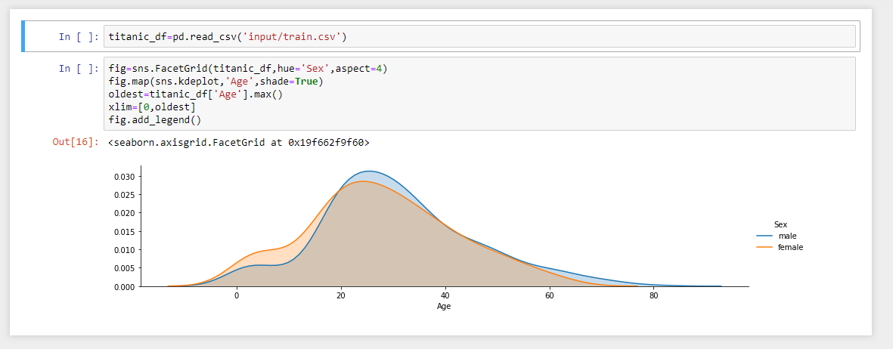

<!DOCTYPE html><html><head><meta content="text/html;charset=utf-8" http-equiv="Content-Type">
         <meta content="utf-8" http-equiv="encoding"><style>
      .markdown-body {
          box-sizing: border-box;
          min-width: 200px;
          max-width: 980px;
          margin: 0 auto;
          padding: 45px;
          border-style: dotted solid;
      }
  
        @media (max-width: 767px) {
          .markdown-body {
              padding: 15px;
          }
          .sidebar {padding-top: 15px;}
      }
  
      .markdown-body .warning {
          border-style: solid;
          background-color: rgba(255,10,0,.05);
      }

      .markdown-body .aside {
        border-left: 10px solid #f16529;        
      }
      /* #358ccb; */

      .markdown-body pre
      {
        border-radius: 0.3rem;
        border: solid 1px #dce6f0;
      }

      .main {
        margin-left: 200px; /* Same as the width of the sidenav */
        padding: 0px 10px;
      }

      /* The sidebar menu */
      .sidebar {
        height: 100%; /* Full-height: remove this if you want "auto" height */
        width: 200px; /* Set the width of the sidebar */
        position: fixed; /* Fixed Sidebar (stay in place on scroll) */
        z-index: 1; /* Stay on top */
        top: 0; /* Stay at the top */
        left: 0;
        background-color: #F2E9E4; 
        overflow-x: hidden; /* Disable horizontal scroll */
        padding-top: 20px;
        padding-left: 10px;
        color: #261C16;
        border: 1px solid #D9D0C7;
      }

      /* The navigation menu links */
      .sidebar a {
        color: #261C16;
        display: block;
      }

      /* When you mouse over the navigation links, change their color */
      .sidebar a:hover {
        color: #8C8480;
      }

      .markdown-body .footnote-ref {
          padding-left:1px;
      }

      .markdown-body .footnote-ref a {
        color: #261C16;
        text-decoration: none;
      }

      </style>
    <link rel="stylesheet" href="/Book/github-markdown.css"><link rel="stylesheet" href="/Book/github.css"></head></html><div class="sidebar">
            <h3 id="home"><a href="/Book/">Home</a></h3>
<h3 id="introduction">Introduction</h3>
<ul>
<li><a href="/Book/01-introduction/about.html">About this book</a></li>
<li><a href="/Book/01-introduction/motivation.html">Motivation</a></li>
<li><a href="/Book/01-introduction/bigideas.html">Big Ideas</a></li>
</ul>
<h3 id="engineering-basics">Engineering Basics</h3>
<ul>
<li><a href="/Book/02-basics/basicskills.html">Basic Skills</a></li>
<li><a href="/Book/02-basics/Shells.html">Resources</a></li>
<li><a href="/Book/02-basics/Setup.html">An installation philosophy</a></li>
<li><a href="/Book/02-basics/Environments.html">A philosophy: Be able to throw away your machine and still code</a></li>
<li><a href="/Book/02-basics/profile.html">Checking your local environment</a></li>
</ul>
<h3 id="computing-environments">Computing Environments</h3>
<ul>
<li><a href="/Book/03-environments/virtualization.html">Virtualization</a></li>
<li><a href="/Book/03-environments/VM.html">Preqs</a></li>
<li><a href="/Book/03-environments/provision.html">REST Refresher</a></li>
<li><a href="/Book/03-environments/containers.html">Setup</a></li>
</ul>
<h3 id="configuration-management">Configuration Management</h3>
<ul>
<li><a href="/Book/04-configuration/configure.html">Configure</a></li>
</ul>
<h3 id="monitoring">Monitoring</h3>
<ul>
<li><a href="/Book/14-monitoring/monitoring.html">Monitoring</a></li>
<li><a href="/Book/14-monitoring/workshop.html">Workshop</a></li>
</ul>

            </div><div class="main"><article class="markdown-body"><h2 id="motivation">Motivation</h2>
<h3 id="can-you-run-this-code">Can you run this code?</h3>
<p>Perhaps, you&#x2019;ve tried to run a piece of code you found online or received from someone else. How did that work out?</p>
<p>The following is a Jupyter notebook plotting a simple graph.</p>
<p></p>
<p>Rather than getting the desired result, often, the default experience is failure:</p>
<pre><code class="undefinedpython">ModuleNotFoundError: No module named &apos;seaborn&apos;</code></pre>
<p>In fact, you might have difficulty running any Jupyter notebook you found. A study by Pimental et al. found that only 24% of Jupyter notebooks could be executed, and only 4% had reproducible results<sup class="footnote-ref" id="marked-fnref:Pimental:2019"><a href="#marked-fn:Pimental:2019">[Pimental:2019]</a></sup>. They note that reproducibility suffers because the notebook format does not encode dependencies or dependency versions. For example, the recent release of Tensorflow version 2.0 introduced many breaking changes. As a result, many Jupyter notebooks are not runnable with the latest version of the framework. This problem is not limited to just Jupyter notebooks. At Google, Seo et al. also found that approximately 50% of build errors are caused by dependencies<sup class="footnote-ref" id="marked-fnref:Seo:2014"><a href="#marked-fn:Seo:2014">[Seo:2014]</a></sup>.
Horton and Parnin found only 24.4% of Python gists from GitHub run without error. The main cause of failure, experienced by 52.4% of the gists evaluated, was a dependency error.  Further, the effort involved in manually constructing an environment specification is non-trivial &#x2014; developers can spend between 20 minutes and 2 hours creating a Dockerfile for a single code snippet, and often fail to construct a valid specification<sup class="footnote-ref" id="marked-fnref:Horton:2018"><a href="#marked-fn:Horton:2018">[Horton:2018]</a></sup>.</p>
<p>In general, Jean Yang, a promiment computer scientist with a PhD from MIT, summaries this experience as a developer:</p>
<blockquote>
<p>When I&#x2019;m not coding in Python, but simply using stuff packaged with scripts written in Python, I am spending nontrivial time sys-admining just to do basic things.</p>
</blockquote>
<p>In some ways, we all must learn to be <em>end-user system administrators</em>, whether we like it or not.</p>
<h3 id="the-value-of-code">The value of code?</h3>
<p>What is the value of code, one that currently sits in a file on your computer? </p>
<p><strong>Approximately $0.</strong></p>
<p>For code to have value, we must look beyond the act of creation. Where will the code run, how will that environment look like, how is it maintained, how do we know it is still working? Furthermore, useful code, is also being used&#x2014;perhaps by millions. How do you change and shape it to be better while still be useful to those already using it? </p>
<p>Resilient and scalable software co-exists with its computing environments, i.e. infrastructure. There are countless ways to design and build this co-existence, but the first step is to recognize its necessity.</p>
<blockquote>
<p>You will learn how to design, deploy, and operate code and its computing environment&#x2014;not as isolated concerns&#x2014;but co-equal partners.</p>
</blockquote>
<h3 id="references">References</h3>
<p class="footnote"><span id="marked-fn:Pimental:2019">Pimental:2019:</span> Pimental, et al. A large-scale study about quality and reproducibility of jupyter notebooks, in Proceedings of the 16th International Conference on Mining Software Repositories (MSR), 2019. <a href="#marked-fnref:Pimental:2019">&#x21A9;</a></p>
<p class="footnote"><span id="marked-fn:Seo:2014">Seo:2014:</span> Seo, Hyunmin, et al. &#x201C;Programmers&#x2019; build errors: a case study (at google).&#x201D; Proceedings of the 36th International Conference on Software Engineering. 2014. <a href="#marked-fnref:Seo:2014">&#x21A9;</a></p>
<p class="footnote"><span id="marked-fn:Horton:2018">Horton:2018:</span> Horton, Parnin. Gistable: Evaluating the Executability of Python Code Snippets on GitHub, 2018 IEEE International Conference on Software Maintenance and Evolution (ICSME), Madrid, 2018, pp. 217-227, doi: 10.1109/ICSME.2018.00031. <a href="#marked-fnref:Horton:2018">&#x21A9;</a></p>
</article></div>